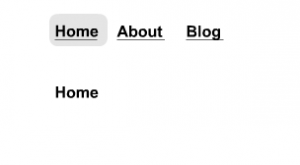
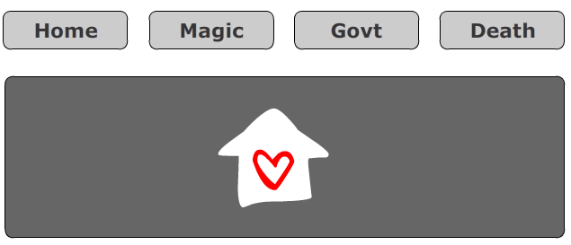

Flash prototyping - Pros and, er thats all really
A couple of weeks ago I went to a workshop run by Philip Fierlinger of Xero fame, all about Flash prototyping. It was generally a good session, and although there wasn’t anything particularly new that I learnt about Flash - looking at Philip’s prototypes opened my mind to the possibilities of using it for a few upcoming projects at Chrome. Here’s a brief screenshot of the control buttons in Philip’s tutorial templates.
Phillip’s Flash Controls

{kind=link}
And here’s the simple prototype I made in the workshop - even though the workshop was focused to a Powerpoint “slide” style of building, I found it just as quick to build a “buttons” style prototype to give the user open access to the functionality. Hit the pic to see the prototype in action.
Screenshot of Flash Prototype

So I’m almost finished my second prototype for a project, and today we presented to a client and I showed a Flash prototype instead of a boring old static set of wireframes. In a few words - it went extremely amazingly well. So well in fact, that because this is a new client we’re dealing with, I was half wondering whether it was just the client and not the process. But I must say - this is the first time I have ever presented and not really had even a single question at the end. After 20 minutes of showing them the prototype and talking about it they knew exactly what they were getting, so we ended up waiting for the designer to show up. Done and done. I recently read an article about Flash prototyping on Boxes and Arrows and there was a lot of critiscism about length of time it takes to build, and ending up with something that can’t be used further down the track (as in the case of CSS/html). But the prototype I built took about the same time, if not a little less than a Visio diagram, and I didn’t have to answer any functionality questions which looks like it will save time in the long run. I even built my IA site map into a fancy little button in the top left hand corner of the prototype. Seems like it’s all win win to me.